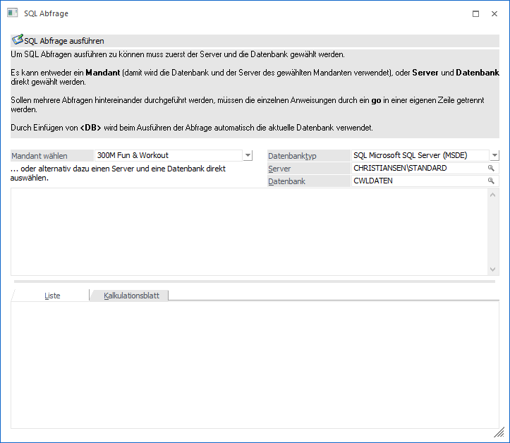
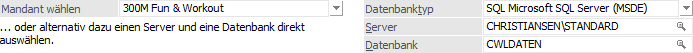
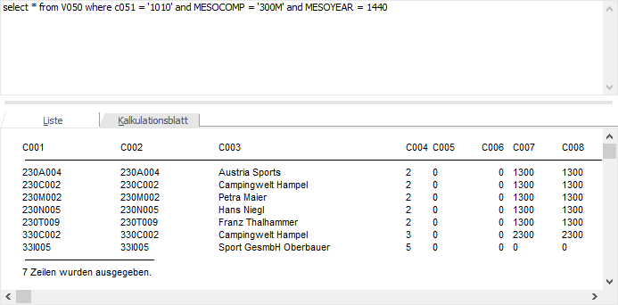
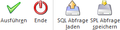

Über den Menüpunkt
1 System
1 SQL Abfrage
können Abfragen am SQL-Server ausgeführt werden. Dadurch müssen nicht die Tools des SQL-Servers verwendet werden, die oft auch gar nicht zur Verfügung stehen.
Achtung
Es werden max. 10000 Datensätze angezeigt. Größere Abfragen sollten daher z.B. im SQL Server Management Studio durchgeführt werden.

Grundsätzlich gibt es zwei Möglichkeiten, auf Datenbereiche zuzugreifen.
ü Über die Auswahl eines
Mandanten
Damit werden die Informationen wie Datenbanktyp, Server und
Datenbank bereits vorgeschlagen.
ü Über die Auswahl eines
Servers/einer Datenbank
Damit kann auch auf Datenbanken zugegriffen werden,
die nicht - wie die Mandanten - in Datenbankverbindungen enthalten sind (z.B.
Systemdatenbank der WinLine).
Abfrageziel

Ø Mandant wählen
Aus der Auswahllistbox kann ein Mandant gewählt werden. Es werden alle Mandanten vorgeschlagen, die in den Datenbankverbindungen hinterlegt sind. Mit der Auswahl eines Mandanten werden gleich die Felder Datenbank Typ, Server und Datenbank ausgefüllt, diese Felder müssen dann nicht mehr extra bearbeitet werden.
Alternativ können diese Informationen auch individuell eingegeben werden:
Ø Datenbanktyp
Aus der Auswahlliste kann gewählt werden, auf welche Art von Datenbank mit der Abfrage zugegriffen werden soll. Dabei gibt es 3 Möglichkeiten:
ü DAO Microsoft Access
Der
Zugriff erfolgt auf eine ACCESS-Datenbank.
ü SQL Microsoft SQL Server
(MSDE)
Der Zugriff erfolgt auf einen SQL-Server oder auf eine
MSDE-Installation
ü POS PostgreSQL
Der Zugriff
erfolgt auf deine PostGreSQL-Server
Ø Server
In diesem Feld muss der Server angegeben werden, auf dem die Datenbank liegt, auf der die Abfrage durchgeführt werden soll. Bei der Angabe gibt es 2 Möglichkeiten: entweder es wird der Maschinenname (Computername) des SQL-Servers angegeben, oder - wenn die Abfrage auf dem Computer mit dem SQL-Server selbst ausgeführt wird - es kann (LOCAL) eingegeben werden. Durch Drücken der F9-Taste kann auch nach allen SQL-Servern gesucht werden. Wurde als Datenbank Typ "DAO Microsoft Access" ausgewählt, muss hier das Verzeichnis angegeben werden, in dem sich die Datenbank befinden. Mit der Matchcodefunktion kann nach allen Verzeichnissen gesucht werden.
Ø Datenbank
Hier muss die Datenbank angegeben werden, auf der die Abfrage ausgeführt werden soll. Durch Drücken der F9-Taste kann nach allen Datenbanken gesucht werden, die auf dem zuvor eingegebenen Server vorhanden sind. Wurde als Datenbank Typ "DAO Microsoft Access" gewählt, muss hier die Access-Datenbank eingetragen werden. Auch hier gibt es wieder über die F9-Taste die Möglichkeit, nach allen Datenbanken zu suchen.
SQL-Abfrage

Ø Eingabefeld
In diesem Feld kann die Abfrage eingetragen werden. Welche Möglichkeiten es dafür gibt, entnehmen Sie bitte dem SQL-Handbuch.
Beispiel
select * from V050 where C051 = '1010'
Diese Abfrage zeigt alle Konten an, bei denen die Postleitzahl "1010" ist, wobei in diesem Fall alle Konten aus allen Mandanten angezeigt würden. Damit die Abfrage eingeschränkt werden kann, gibt es 2 Parameter, die mit angegeben werden können:
ü MESOCOMP = '~~~~'
XXXX steht
für die Mandantennummer, wobei diese unter ein einfaches Hochkomma (') gesetzt
werden muss, weil die Mandantennummer ein alphanumerisches Feld ist.
ü MESOYEAR = yyyy
yyyy steht für
den Monat, in welchem das Wirtschaftsjahr beginnt. Dabei wird die Zahl aus der
Anzahl der Monate seit 1900 gerechnet (Beispiel: WJ-Beginn 1/2020, yyyy = 1440,
WJ-Beginn = 6/2020, yyyy = 1445).
D.h. mit den zwei Parametern versehen, würde die Abfrage so aussehen:
ü select * from V050 where C051 = '1010' and MESOCOMP = '300M' and MESOYEAR = 1440
Ø Abfrage-Ergebnis
Für die Anzeige des Ergebnisses gibt es 2 Möglichkeiten:
ü Liste
Das Ergebnis wird im
unteren Bereich des Fensters dargestellt, wobei die Ausgabe in der Form eines
Formulars erfolgt. Demnach kann der Inhalt ggf. auch mit der rechten Maustaste
kopiert und in ein anderes Programm transferiert werden.
ü Kalkulationsblatt
Das Ergebnis
wird in Form einer Tabelle angezeigt. Diese kann in weiterer Folge über die
rechte Maustaste auch als XLS-Datei abgespeichert werden.
Buttons

Ø Ausführen
Durch Anklicken des Ausführen-Buttons oder durch Drücken der F5-Taste bzw. der Tastenkombination ALT + E wird die Abfrage gestartet, wobei das Ergebnis in der zuvor gewählten Form (Liste oder Kalkulationsblatt) ausgegeben wird.
Hinweis
Während der Ausführung wird ein Statusfenster über die Abfrage angezeigt. Durch einen Abbruch-Button besteht dabei auch die Möglichkeit, die Abfrage abzubrechen. Es werden danach nur jene Zeilen angezeigt, die zum Zeitpunkt des Abbruchs bereits erfasst waren.
Achtung
Im Fenster der SQL-Abfrage werden max. 10000 Datensätze angezeigt. Größere Abfragen sollten daher z.B. im SQL Server Management Studio durchgeführt werden.
Ø Ende
Durch Anwahl des Buttons "Ende" bzw. der Taste F5 wird das Fenster geschlossen.
Ø SQL Abfrage laden
Durch Anklicken des Buttons "SQL Abfrage laden" kann eine bereits abgespeicherte SQL-Abfrage geladen werden - sie muss nicht nochmals eingegeben werden.
Ø SQL Abfrage speichern
Durch Anklicken dieses Buttons kann eine eingegebene Abfrage gespeichert werden. Damit kann zu einem späteren Zeitpunkt wieder geladen werden und steht somit immer wieder zur Verfügung.